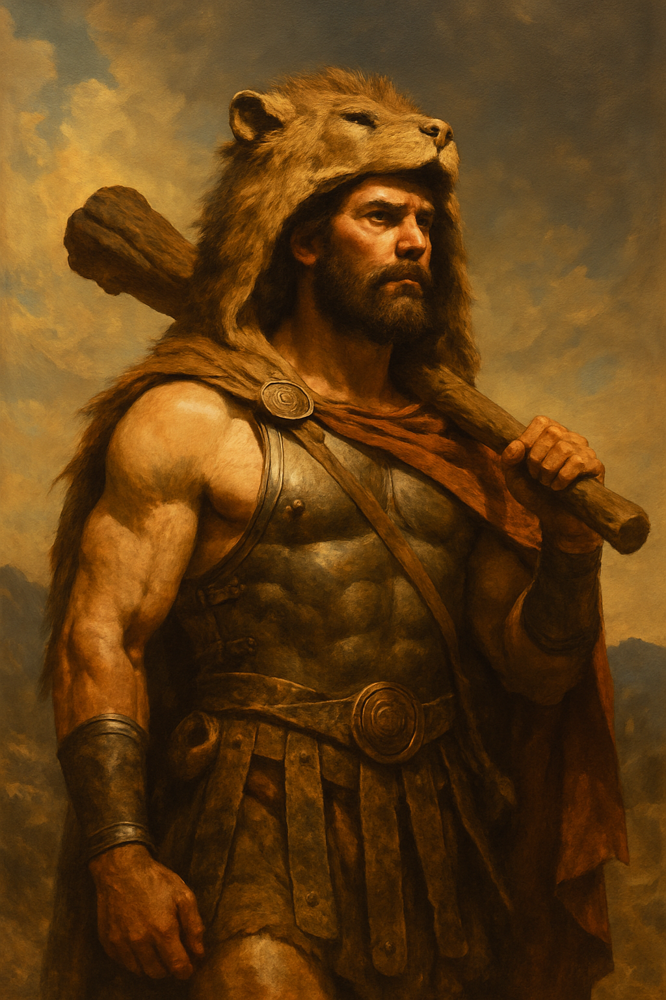

Heracles, conocido por los romanos como Hércules, fue el más grande de los héroes griegos. Hijo del dios supremo Zeus y de la mortal Alcmena, su existencia estuvo marcada desde su origen por el conflicto eterno entre dioses y hombres. Desde su primer aliento, Heracles fue un ser excepcional: un niño dotado de una fuerza inhumana que le permitió enfrentarse a los desafíos que la vida le presentó, incluso cuando era un bebé. Hera, la esposa celosa de Zeus, juró hacerle la vida imposible. Fue así como, en su primer encuentro con la diosa, Heracles estranguló con sus propias manos a dos serpientes enviadas por Hera para matarlo mientras aún estaba en su cuna.
El destino de Heracles no sería menos dramático. En un momento, Hera lo sumió en una terrible locura, llevándolo a cometer el acto más trágico de su vida: el asesinato de su esposa Mégara y sus hijos. Devastado por el dolor y la culpa, Heracles decidió consultar el oráculo de Delfos, quien, en respuesta a su sufrimiento, le impuso una penitencia divina. El oráculo le ordenó realizar doce trabajos, todos ellos considerados imposibles para un mortal. Estos trabajos fueron impuestos por el rey Euristeo, quien veía en Heracles un rival peligroso.
Cada uno de los doce trabajos de Heracles fue una prueba sobrehumana. Enfrentó al León de Nemea, cuya piel era impenetrable, y lo mató con sus propias manos, usando su fuerza colosal para despojarlo de su piel. Luego, se vio obligado a realizar tareas como capturar a la cierva de Cerinia, que era tan rápida que ningún ser mortal podía atraparla, o limpiar los Establos de Augías en un solo día, una tarea que parecía imposible debido a la acumulación de años de suciedad.
Entre los trabajos más peligrosos estuvo la captura del Can Cerbero, el monstruoso perro de tres cabezas que guardaba las puertas del inframundo. Heracles descendió a los reinos de Hades y, con su fuerza y valentía, logró dominar al monstruo, demostrando que incluso el reino de la muerte no era un obstáculo para él. Sin embargo, no todos los trabajos fueron de lucha física: en algunos momentos, Heracles tuvo que usar su astucia y persuasión, como cuando logró obtener las manzanas doradas del jardín de las Hespérides, custodiadas por una terrible serpiente.
A lo largo de estos trabajos, Heracles no solo demostró su fuerza física excepcional, sino también su perseverancia, coraje y habilidades estratégicas. A pesar de la enormidad de los desafíos, nunca abandonó, y cada victoria reforzó su leyenda. Cada cicatriz que adornaba su cuerpo contaba una historia de lucha, sacrificio y superación. Heracles no solo era un guerrero; era un símbolo de redención.
Tras completar los doce trabajos, Heracles alcanzó la inmortalidad. Los dioses, que en su mayoría habían sido hostiles hacia él, le otorgaron un lugar en el Olimpo. Aquí, se convirtió en uno de los dioses inmortales, símbolo de la fuerza y la perseverancia frente a la adversidad. La reconciliación con Hera, que finalmente aceptó su grandeza, marcó el final de su sufrimiento y la entrada de Heracles a una nueva existencia. En su ascenso al Olimpo, Heracles se convirtió en un símbolo de la lucha humana por la redención, un ejemplo eterno de que incluso los héroes más grandes nacen de la oscuridad.
